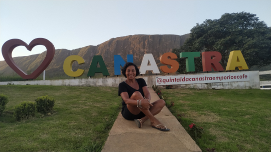
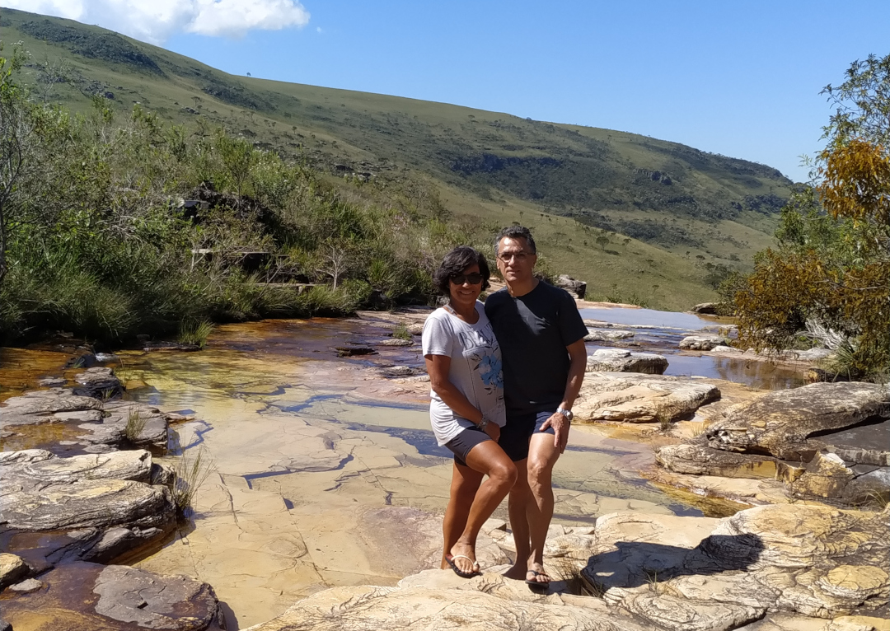
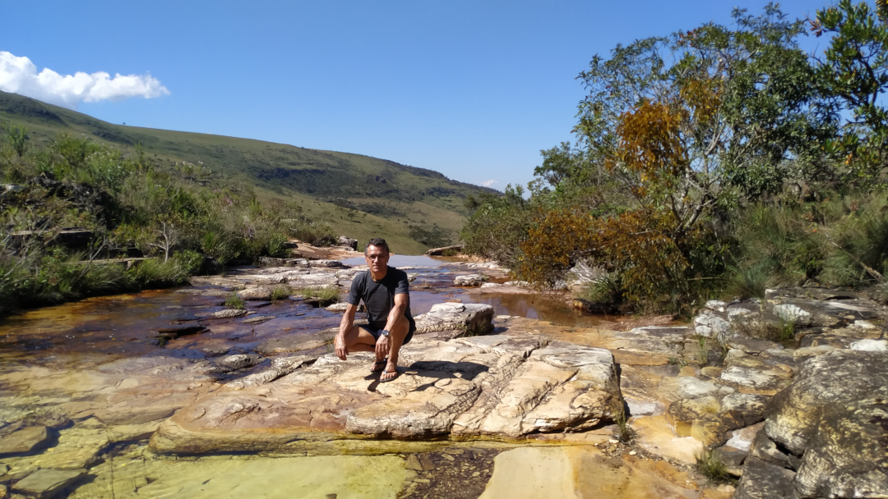
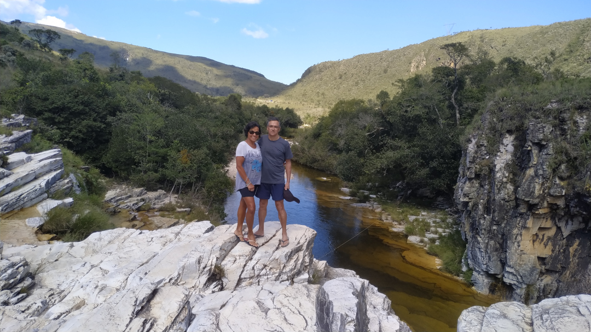
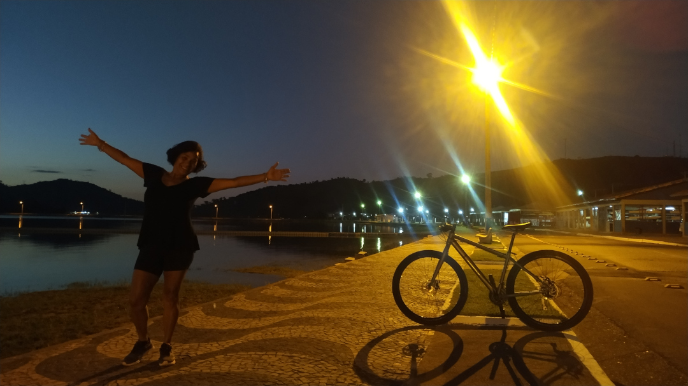
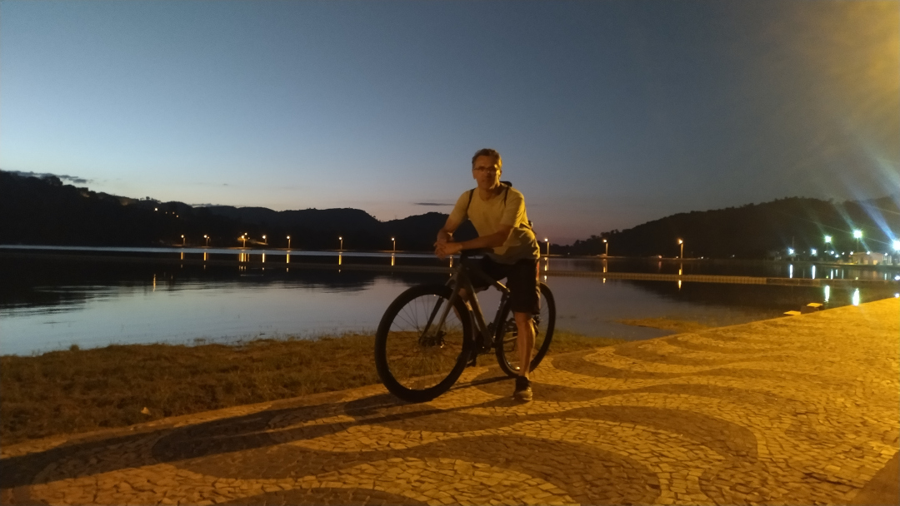
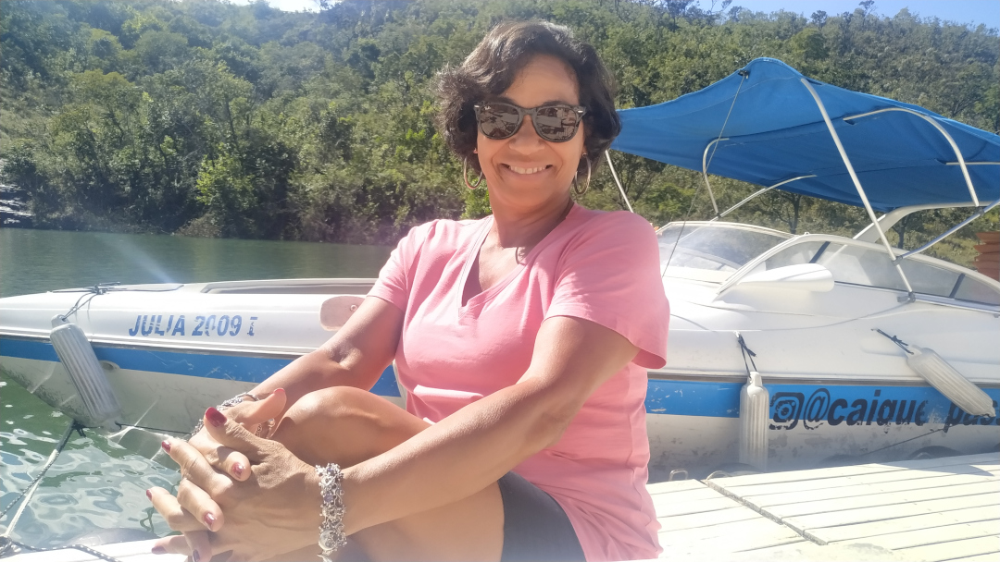

Capitólio
21/04/2023
Sempre ouvia falar sobre Capitólio, mas só depois do acidente ocorrido em 8 de janeiro de 2022, quando um paredão de pedra de um cânion desmoronou no Lago de Furnas, causando a morte de dez pessoas, todas ocupantes de uma mesma lancha. Outras 27 pessoas ficaram feridas. O bloco de pedra atingiu três embarcações que transportavam turistas para conhecer a região. Veja a notícia no Jornal Nacional. Muito lamentável o que aconteceu, mas fiquei curiosa para conhecer. É realmente um lugar espetacular. Além dos passeios de lancha pelo Lago de Furnas, fizemos vários outros passeios pela região.


Serra da Canastra
Saímos cedo de Capitólio com destino à Serra da Canastra, uma distância de aproximadamente 130 km. Ao chegar, seguimos em direção à parte alta, uma das rotas turísticas mais procuradas. Sem nos dar conta e sem conhecer o percurso, pensamos 'vamos indo até onde der'. Já estávamos bem longe quando percebemos que estava num trecho que não dava mais para voltar. A estrada era bem estreita, esburacada e íngreme. De repente, o carro ficou preso num buraco, nem ia para frente, nem para trás. Foi um sufoco: de um lado, o paredão rochoso; do outro, um abismo de arrepiar. No meio de uma curva acentuada, saímos do carro para avaliar a situação. Colocamos algumas pedras no buraco, mas não adiantou. Tereza ficou fora para me orientar e fui tentar uma ré bem curta por conta do perigo de cair no abismo. Consegui voltar alguns centímetros e travei o carro. Desci novamente para calçar o pneu com pedras. A Tereza se afastou bastante e voltei para o carro determinado a sair dali. Acelerei forte, o carro deu um solavanco e finalmente saiu. Que aventura! Só aí nos demos conta de que aquele trajeto só deveria ser feito com carro com tração nas 4 rodas. Apesar do susto, valeu muito a pena, pois pudemos apreciar paisagens deslumbrantes, a nascente do Rio São Francisco, o curral de pedras e a incrível queda d'água que forma uma das maiores cachoeiras do Brasil, a Casca d'Anta.




Poços de Caldas
Poços de Caldas é uma cidade localizada no sul do estado de Minas Gerais, Brasil. É conhecida por suas águas termais, clima ameno e paisagens naturais deslumbrantes. A cidade é um destino turístico popular, oferecendo uma variedade de atrações, incluindo parques, cachoeiras, trilhas e fontes de água mineral. Além disso, Poços de Caldas possui uma rica herança cultural, com arquitetura histórica e eventos culturais ao longo do ano. É um lugar ideal para relaxar, desfrutar da natureza e explorar a cultura local.